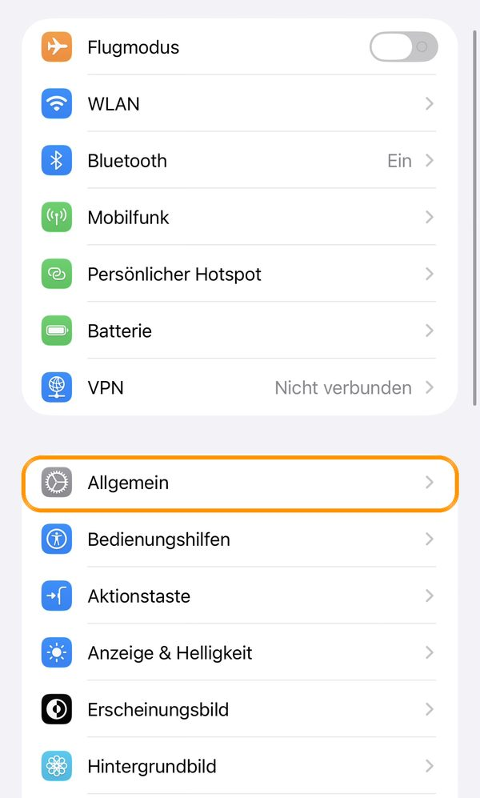
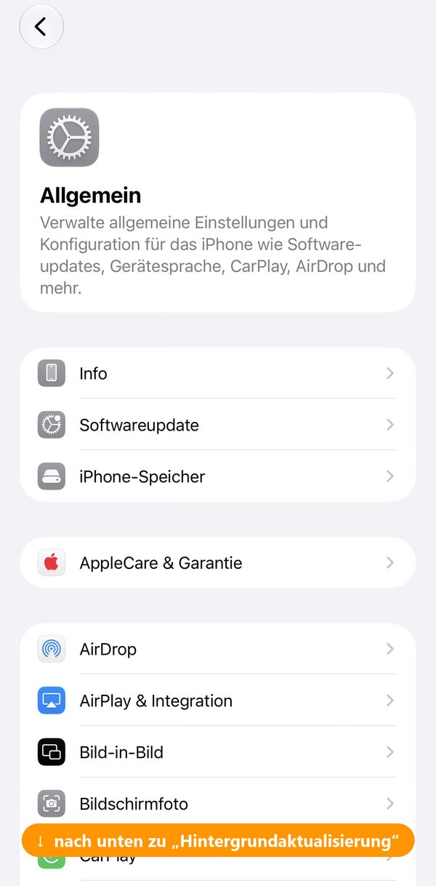
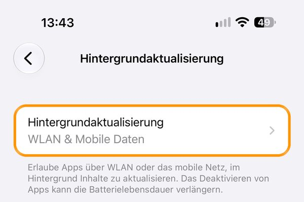
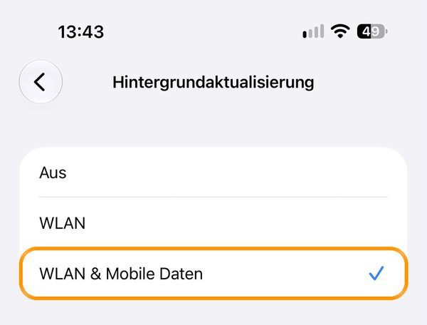
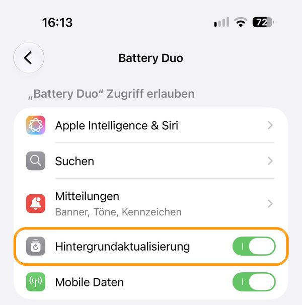

Battery Duo zeigt den Akku deiner Apple Watch und deines iPhones gleichzeitig auf dem Zifferblatt – als Doppelring mit Datum, als Zahlen, Ringe oder Balken, farbig nach Füllstand.
iOS lässt Apps im Hintergrund nur selten laufen. Richte in der iPhone-App die „Turbo-Aktualisierung“ ein: ein fertiger Kurzbefehl plus Automationen in der Kurzbefehle-App schicken den Wert jedes Mal, wenn du das iPhone benutzt, lädst oder der Akku einen 5-%-Schritt unterschreitet.
Damit der iPhone-Wert auch ohne geöffnete App zur Uhr kommt, braucht Battery Duo die Hintergrundaktualisierung. Ist der Schalter bei Battery Duo grau, ist sie für alle Apps aus:





Im Stromsparmodus pausiert iOS die Hintergrundaktualisierung trotzdem – das ist normal.
iOS meldet Apps den Akkustand nur in 5-%-Schritten. Eine Abweichung von wenigen Prozent ist normal.
Die App ist 3 Tage kostenlos nutzbar, danach wählst du ein Jahresabo oder einen Einmalkauf. Auf einem neuen Gerät oder nach einer Neuinstallation tippst du in den Einstellungen auf „Käufe wiederherstellen“. Abos verwaltest und kündigst du in den Einstellungen deines Apple-Accounts.
Fragen, Wünsche, Fehler: info@bertramplischke.de – oder in der App unter „Feedback senden“.
Battery Duo shows the battery level of your Apple Watch and your iPhone on the watch face at the same time – as a double ring with the date, as numbers, rings or bars, colored by charge level.
iOS lets apps run in the background only rarely. In the iPhone app, set up the “Turbo update”: a ready-made shortcut plus automations in the Shortcuts app send the value every time you use the iPhone, charge it, or the battery drops below a 5% step.
So that the iPhone value reaches the watch even when the app is not open, Battery Duo needs Background App Refresh. If the switch next to Battery Duo is grey, it is off for all apps:
The screenshots show the German system menus. The menu names in English iOS are the ones in the steps above.
In Low Power Mode, iOS still pauses Background App Refresh – that is normal.
iOS reports the battery level to apps only in 5% steps. A difference of a few percent is normal.
The app is free to use for 3 days. After that you choose a yearly subscription or a one-time purchase. On a new device or after reinstalling, tap “Restore Purchases” in the settings. You manage and cancel subscriptions in the settings of your Apple Account.
Questions, requests, bugs: info@bertramplischke.de – or “Send Feedback” in the app.